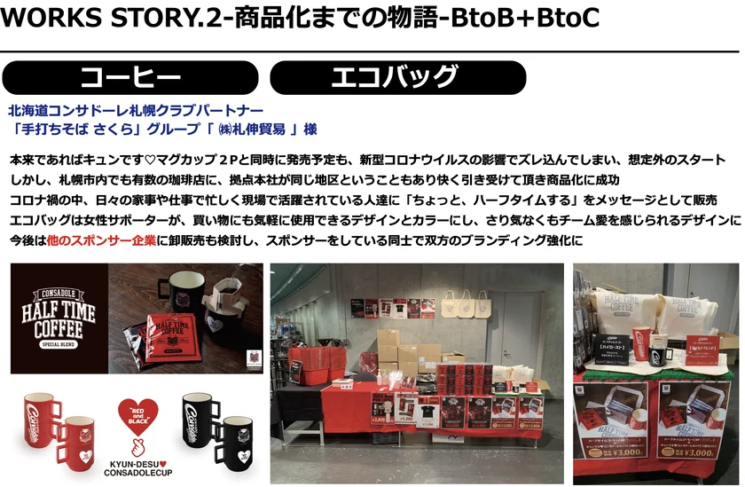
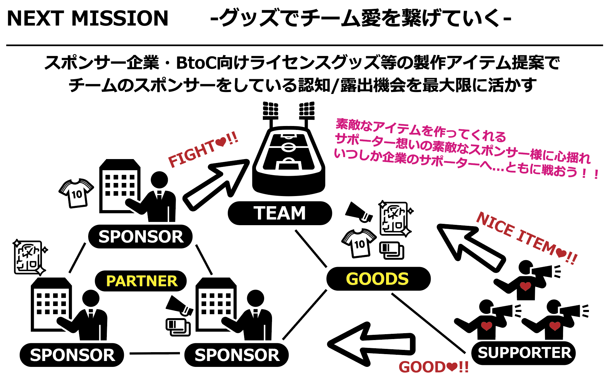

01 チームオリジナルグッズ
MADE FOR YOUR STORY
つくった先の、
使われ方まで。
ロゴをどう見せるか。どんな場面で使ってもらうか。
制作例から、あなたのグッズづくりのヒントを見つけてください。

02 BtoB

03 BtoB Vol.2



MADE FOR YOUR STORY
ロゴをどう見せるか。どんな場面で使ってもらうか。
制作例から、あなたのグッズづくりのヒントを見つけてください。
01 チームオリジナルグッズ

